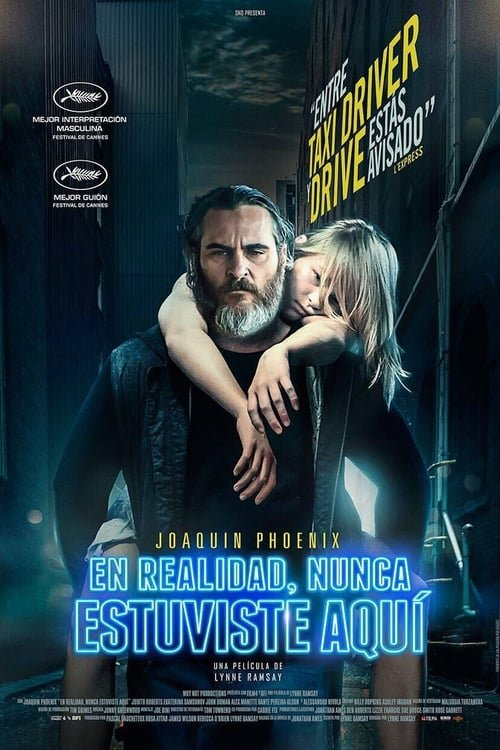

En realidad, nunca estuviste aquí (2017)

Plataforma: Disney+
Puntuación IMDb: 6.5/10
Duración: N/A
Género:
Sinopsis Rápida
Sinopsis Detallada
Joe, ex marine y antiguo veterano de guerra, es un tipo solitario que dedica su tiempo a intentar salvar a mujeres que son explotadas sexualmente. No se permite ni amigos ni amantes y se gana la vida rescatando jóvenes de las garras de los tratantes de blancas. Un día recibe la llamada de un político porque su hija ha sido secuestrada.